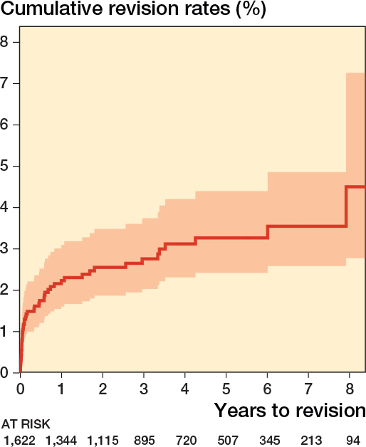
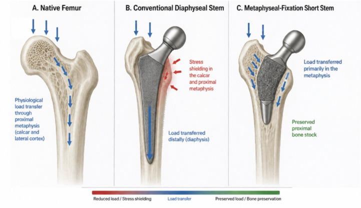
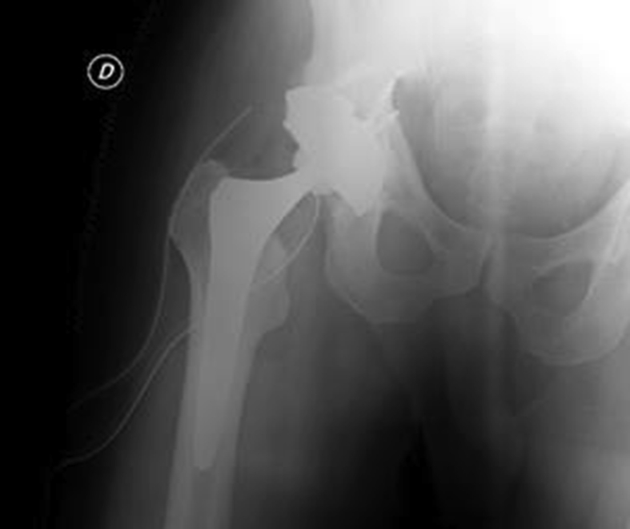

6107 — Thay khớp háng ở người sống sót ung thư nhi: chọn implant, ngưỡng lỏng khớp & lịch theo dõi / Total hip arthroplasty in childhood cancer survivors
Tags: pattern:thay-khop pattern:long-khop pattern:hoai-tu-chom-dui vung:khop-hang vung:co-xuong score:ARCO score:DeLee-Charnley protocol:X-quang-khop-hang protocol:CT-khop-hang
Mức chắc chắn (certainty): tổng hợp y văn (literature synthesis) — ghép dữ liệu sổ đăng ký khớp háng Đức (Elliott J et al., Acta Orthop 2026, PMC12766173; Zellner AA et al., Arthroplasty 2026, PMC13445652), đoàn hệ THA ở trẻ ≤ 16 tuổi (Van de Velde SK et al., J Child Orthop 2017;11:428, PMC5725768), tổng quan chọn implant bảo tồn xương (Perulli R et al., J Clin Med 2026;15:5894, PMC13467515), phân tích gộp stem ngắn (Jiang Y et al., BMC Musculoskelet Disord 2026, PMC13640355), kết quả cup tantalum trên xương đã xạ (De Paolis M et al., Acta Orthop Traumatol Turc 2019, PMC6599415) và chức năng dài hạn của người sống sót có hoại tử xương (DeFeo BM et al., Phys Ther 2020, PMC7246066).
Điểm chốt của bài: người sống sót ung thư nhi cần THA thường còn 40–60 năm tuổi thọ khớp, nên câu hỏi không phải "có mổ được không" mà là "implant nào để lần mổ thứ hai vẫn còn xương". Sổ đăng ký Đức (1.622 THA ở tuổi ≤ 30) cho thấy 99% dùng chuôi không cement, 97% chỏm ceramic, nguy cơ mổ lại tích lũy 8 năm chỉ 4,6% (KTC 95% 2,8–7,3) — nhưng bệnh háng nhi (Perthes, cắt xương chậu) làm tăng nguy cơ mổ lại 2,8–4,3 lần. Vì vậy: bảo tồn xương là ưu tiên số một, và mọi đau khớp sau mổ phải loại trừ nhiễm trùng trước khi gọi là "lỏng khớp".
1. Tổng quan — vì sao người sống sót ung thư nhi là nhóm "khớp háng khó"
- Ai cần mổ: (1) hoại tử chỏm xương đùi (ON) giai đoạn ARCO IV sau corticoid/ALL — trong số ON nặng, 67% phải thay khớp và 20% còn đau mạn; (2) thoái hóa thứ phát sau xạ trị vùng chậu; (3) di chứng bệnh háng nhi (Perthes, DDH, trượt đầu xương đùi) đã phẫu thuật; (4) sau cắt u xương/limb salvage vùng đầu trên xương đùi.
- Vì sao khó hơn người già — 4 lý do cơ học/sinh học:
- Xương đã xạ (irradiated bone) — bộ ba giảm tế bào, giảm mạch máu, giảm oxy (hypocellular – hypovascular – hypoxic): xương không tích hợp được với bề mặt implant, nguy cơ lỏng và nhiễm trùng cao hơn, và xương quanh khớp đặc xương, giòn.
- Xương đã hóa trị + corticoid — giảm mật độ xương, mỏng vỏ, dễ lún (subsidence) và gãy quanh chuôi.
- Còn 40–60 năm tuổi thọ — nguy cơ mổ lại suốt đời tới ~35% ở người trẻ hoạt động mạnh (Perulli 2026, PMC13467515); mỗi lần mổ lại mất thêm xương.
- Mô mềm quanh khớp yếu sau mổ u/xạ → trật khớp và yếu cơ dạng háng.
- Vì sao hình ảnh trông như vậy (vật lý + cơ sinh):
- Stress shielding (bảo vệ ứng suất — định luật Wolff): chuôi cứng chạy dài trong ống tủy lấy hết lực → xương hành xương phía trên teo dần (mỏng vỏ, giảm mật độ trên X-quang vùng Gruen 1 và 7). Chuôi ngắn cố định ở hành xương truyền lực sát cổ xương đùi hơn → giữ mật độ xương hành xương (phân tích gộp 6 RCT, 398 bệnh nhân: SMD 0,59 tại vùng Gruen 1 lúc 12 tháng, p = 0,002) (PMC13640355).
- Lỏng vô khuẩn (aseptic loosening): hạt mài mòn (polyethylene, kim loại) → đại thực bào tiết cytokine → tiêu xương quanh implant → đường sáng (radiolucent line) tiến triển ≥ 2 mm và lún chuôi > 2 mm trên X-quang.
- Đặc xương do xạ làm mất tương phản giữa xương và implant trên phim → khó đọc đường sáng; cần so phim nền và CT khi nghi ngờ.
- Ngưỡng định lượng của nhóm trẻ (sổ đăng ký Đức, 2013–2023):
- 1.622 THA / 1.452 bệnh nhân ≤ 30 tuổi, tuổi trung bình 26 (11–30), 56% nam; chẩn đoán: thoái hóa thứ phát 72%, ON 22%, loạn sản háng 3,2%.
- 99% không cement, 97% chỏm ceramic; theo dõi trung bình 3,7 năm; 47 ca mổ lại; nguy cơ mổ lại tích lũy 8 năm 4,6% (2,8–7,3); nguyên nhân mổ lại hay gặp nhất là nhiễm trùng 11 ca (0,7%).
- Yếu tố nguy cơ mổ lại: Perthes đã mổ HR 4,3 (1,9–9,6), cắt xương chậu HR 2,8 (1,1–7,5), loạn sản háng HR 3,4 (1,3–8,5) (PMC12766173).
- THA ở trẻ ≤ 16 tuổi: 24 khớp (18 trẻ), tuổi trung bình 14,6 (11–16), không cement, theo dõi 3,8 năm (1–8): không ca mổ lại, không đường sáng, không mòn — nhưng tác giả nhấn mạnh chưa đủ dài để nói về tuổi thọ implant (PMC5725768).
- Xương đã xạ: 12 THA trên nền xạ trị (liều trung bình 5.500 cGy, 3.000–13.600), cup tantalum, theo dõi 68 tháng (38–136): không ca nào mổ lại vì lỏng vô khuẩn, 1 ca lỏng nhiễm khuẩn, 2 ca trật khớp điều trị bảo tồn, Harris hip score 46 → 85,3 (PMC6599415).
- Chức năng dài hạn: người sống sót có ON (n = 135) so với không ON (n = 1.560): sức gấp mu cổ chân 16,50 vs 24,17 N·m/kg, Timed Up & Go 5,66 vs 5,12 giây; nhóm ON háng đã mổ là nhóm yếu nhất (13,75 N·m/kg; đi bộ 6 phút 523,5 vs 572,1 m) (PMC7246066).
2. Mẫu hình + chẩn đoán phân biệt theo vị trí (Gamut)
- Mẫu hình A — chỏm xương đùi sụp/dẹp, khớp háng đau khi chịu tải (ARCO IV): ON do corticoid (nhóm chính), ON sau ghép tế bào gốc, ON do rượu/idopathic — hình ảnh chốt là mất hình cầu chỏm, hẹp khe khớp, đặc xương dưới sụn.
- Mẫu hình B — khớp háng thoái hóa sau xạ trị vùng chậu: hẹp khe khớp không đều, đặc xương ổ cối trên, có thể gãy cổ xương đùi do xạ; khác ON ở chỗ tổn thương cả hai mặt khớp và tiền sử xạ trong trường chiếu.
- Mẫu hình C — đau sau THA ở người sống sót: theo thứ tự cần loại trừ nhiễm trùng (PJI) → lỏng vô khuẩn → trật/không vững → gãy quanh implant → ARMD/pseudotumor (nếu metal-on-metal) → đau quy chiếu cột sống.
- Mẫu hình D — khối quanh implant: u tái phát/di căn (ung thư nhi), pseudotumor do MoM, tụ máu/thoát dịch bạch mạch — cần MRI có thuật toán giảm kim loại (MAVRIC/WARP) hoặc CT.
- Gamut theo cơ chế: cơ học (lỏng, gãy, trật) vs nhiễm trùng vs sinh học (ARMD, phản ứng mô mềm) vs ung thư — mỗi nhóm quyết định mổ lại hay không khác nhau.
- Mnemonic "PAIN HIP": Peri-prosthetic infection · Aseptic loosening · Instability/dislocation · Neuropathic/spine referral · Heterotopic ossification · Implant failure (fracture/ARMD) · Persistence of tumor.
3. Bảng so sánh phân biệt (ma trận đối chiếu)
| Thực thể (entity) | Hình ảnh điển hình | Chốt vào (rule-in) | Chốt loại (rule-out) | Gợi ý xác nhận |
|---|---|---|---|---|
| Lỏng vô khuẩn (aseptic loosening) | Đường sáng tiến triển ≥ 2 mm quanh cup/chuôi (DeLee–Charnley / Gruen), lún chuôi > 2 mm, thay đổi vị trí cup | Đường sáng TIẾN TRIỂN so phim nền + lún + đau khi chịu tải | Đường sáng không đổi nhiều năm, CRP/ESR bình thường → theo dõi | X-quang lặp 6–12 tháng, so cùng tư thế; CT khi khó |
| Nhiễm trùng quanh implant (PJI) | Có thể bình thường trên phim sớm; tiêu xương quanh implant, phản ứng màng xương, khí mô mềm (muộn) | Đau + CRP/ESR tăng + dịch khớp đục/mủ, 1–2 mẫu cấy cùng loại vi khuẩn, lỗ rò | CRP/ESR bình thường + dịch trong + không lỗ rò → ít nghĩ PJI | Chọc hút khớp trước kháng sinh 2 tuần; cấy + tế bào học; alpha-defensin |
| Trật/không vững khớp | Chỏm ra khỏi cup, lệch trục chuôi; đo góc nghiêng cup 40 ± 10°, anteversion 15 ± 10° | Trật tái diễn + cup sai vị trí/yếu cơ dạng | Cup đúng vị trí + cơ dạng tốt + không trật → loại | X-quang 2 bình diện; CT đo anteversion |
| Gãy quanh implant (periprosthetic fracture) | Đường gãy quanh chuôi/cup, phân loại Vancouver (A/B/C), có/không lỏng | Gãy + đau đột ngột + không tải được | Không đường gãy, chỉ mỏng vỏ do stress shielding → không phải gãy | X-quang + CT; đánh giá lỏng chuôi |
| ARMD/pseudotumor (metal-on-metal) | Khối mô mềm quanh khớp, dịch, phá xương, nang giả; kim loại trong máu tăng | Tiền sử MoM + khối/dịch quanh khớp + ion Co/Cr tăng | Không MoM, không khối → loại | MRI MAVRIC, siêu âm; ion cobalt/chromium |
| Cốt hóa lạc chỗ (heterotopic ossification) | Đám đặc xương ngoài khớp, phân độ Brooker I–IV | Xương lạc chỗ Brooker ≥ II + hạn chế vận động | Không đám đặc xương ngoài khớp → loại | X-quang 3–6 tháng sau mổ; CT |
| U tái phát/di căn quanh implant | Khối mô mềm bắt thuốc, tiêu xương bờ không rõ, không tôn trọng ranh giới implant | Tiền sử ung thư + khối mô mềm + tiêu xương tiến triển | Không khối mô mềm, tổn thương chỉ quanh interface → cơ học | MRI/CT có cản quang, PET-CT, sinh thiết |
| Đau quy chiếu cột sống/thần kinh | Khớp háng bình thường, đau lan theo dermatome, nghiệm pháp cột sống dương | Đau không liên quan tải khớp + hình ảnh khớp sạch + đáp ứng block | Hình ảnh khớp có bất thường tương ứng điểm đau → không quy chiếu | MRI cột sống thắt lưng, block chẩn đoán |

Kaplan–Meier từ sổ đăng ký khớp háng Đức: 1.622 THA ở tuổi ≤ 30, nguy cơ mổ lại tích lũy 4,6% (KTC 95% 2,8–7,3) ở 8 năm; số khớp còn theo dõi giảm từ 1.622 xuống 94 ở năm thứ 8 (bảng at-risk). Nguồn: Elliott J, Wu Y, Steinbrück A, Grimberg AW. Acta Orthop 2026 (PMC12766173, Fig. 2), CC BY 4.0.Ba câu phải trả lời trước khi chọn implant
- Xương còn bao nhiêu? (chất lượng hành xương, đã xạ chưa, có lỏng cũ, có biến dạng giải phẫu) → quyết định chuôi ngắn/bảo tồn vs chuôi tiêu chuẩn vs có cement.
- Còn bao nhiêu năm? (tuổi, dự kiến sống) → ưu tiên khả năng mổ lại, không chỉ tuổi thọ implant.
- Cơ dạng và mô mềm thế nào? (sau cắt u vùng chậu, sau xạ) → quyết định chỏm lớn/dual mobility.
4. Protocol chụp + chọn implant + lịch theo dõi
4.1 Trước mổ
- X-quang khung chậu thẳng + háng nghiêng, có vật chuẩn tỉ lệ; chụp cả bên đối diện để so và phát hiện ON đối bên (ON đa ổ 70–85% ở trẻ — bài 6105).
- CT khung chậu có dựng hình khi: đã xạ vùng chậu, có implant cũ, biến dạng ổ cối, cần đánh giá kho xương ổ cối và anteversion.
- Templating trên phim chuẩn tỉ lệ; đo offset và chênh chiều dài chân trước mổ (người sống sót thường đã có lệch chiều dài do bệnh nền).
- Loại trừ nhiễm trùng trước mổ: CRP, ESR, bạch cầu; chọc hút khớp nếu từng mổ/tiêm; ngừng kháng sinh ≥ 2 tuần trước cấy.
4.2 Chọn implant theo chất lượng xương (bảng quyết định)
| Tình huống | Cup | Chuôi | Chỏm | Lý do |
|---|---|---|---|---|
| ON ARCO IV, xương tốt, < 30 tuổi | Press-fit hemispherical, không cement | Ngắn, cố định hành xương (nếu giải phẫu phù hợp) | Ceramic ≥ 32 mm | Giữ xương hành xương cho lần mổ sau; ceramic giảm mài mòn |
| Xương đã xạ, ổ cối đặc/giòn | Cup tantalum + augment ± vít, có thể cần cup revision | Không cement có rãnh xử lý, hoặc có cement nếu xương rất kém | Ceramic/dual mobility | Tantalum tích hợp xương xốp tốt: 12 ca xạ trị không lỏng vô khuẩn (PMC6599415) |
| Cơ dạng yếu/đã cắt u vùng chậu | Cup tiêu chuẩn ± dual mobility | Tùy xương | Dual mobility hoặc chỏm ≥ 36 mm | Giảm trật khớp khi cơ dạng mất chức năng |
| Trẻ ≤ 16 tuổi, còn lớn | Không cement | Ngắn/tiêu chuẩn tùy kích thước | Ceramic | 24 khớp ≤ 16 tuổi: không mổ lại ở 3,8 năm, nhưng chưa đủ dài (PMC5725768) |
| Xương rất kém, không thể cố định không cement | Có cement (XPE) | Có cement | Ceramic | Ở ≥ 75 tuổi cup cemented XPE tương đương; < 75 tuổi press-fit ưu thế (PMC13445652) |
- Bằng chứng cần nói rõ với gia đình: chuôi ngắn giữ mật độ xương tốt hơn trong 1 năm đầu (SMD 0,59 vùng Gruen 1) nhưng chưa chứng minh giảm tỷ lệ mổ lại — đây là điểm thay thế (surrogate endpoint) (PMC13640355). Không hứa "implant này không bao giờ phải mổ lại".
4.3 Theo dõi sau mổ — ngưỡng hành động
- Mốc chụp: 6 tuần (nền) → 6 tháng → 1 năm → mỗi 1–2 năm; chụp thêm ngay khi đau mới hoặc sau chấn thương.
- Đo và ghi mỗi lần: góc nghiêng cup (mục tiêu 40 ± 10°), anteversion (15 ± 10°), lún chuôi, chiều dài chân, đường sáng theo DeLee–Charnley (I–III) và Gruen (1–7).
- Ngưỡng nghi lỏng: đường sáng tiến triển ≥ 2 mm hoặc liên tục quanh toàn chu vi, lún > 2 mm, di lệch cup > 2° so phim nền → CT ± chọc hút trước khi mổ lại.
- Ngưỡng nghi nhiễm: CRP/ESR tăng không giải thích + đau + dịch khớp đục; cấy 1–2 mẫu trước kháng sinh.
- Tầm soát dài hạn ở người sống sót: đánh giá mật độ xương (DXA), chức năng cơ (gấp mu cổ chân, Timed Up & Go), và biến chứng muộn của điều trị ung thư (xạ, anthracycline) — nhóm ON háng đã mổ là nhóm yếu nhất (PMC7246066).

*So sánh ba cấu hình: A. xương đùi tự nhiên (lực truyền qua hành xương và vỏ bên); B. chuôi dài tiêu chuẩn — lực dồn xuống thân xương (diaphysis), gây stress shielding ở hành xương (mũi tên đỏ); C. chuôi ngắn cố định hành xương — lực truyền chủ yếu ở hành xương, giữ kho xương gần. Nguồn: Perulli R, Graci C, Vitiello R, et al. J Clin Med 2026;15:5894 (PMC13467515, Fig. 1), CC BY 4.0.*flowchart TD
A["Người sống sót ung thư nhi,<br/>đau khớp háng khi chịu tải"] --> B["X-quang khung chậu + háng nghiêng<br/>so phim cũ, chụp cả bên đối diện"]
B --> C{"Còn sụn, chỏm chưa sụp?"}
C -->|Có| D["Bảo tồn: giảm tải, giảm corticoid nếu được,<br/>khoan giải áp/ghép xương (bài 6105)"]
C -->|Không| E["ARCO IV/thoái hóa nặng →<br/>lên kế hoạch THA"]
E --> F{"Đã xạ vùng chậu<br/>hoặc xương rất kém?"}
F -->|Có| G["CT dựng hình: đo kho xương ổ cối,<br/>chọn cup tantalum + augment"]
F -->|Không| H["Press-fit hemispherical +<br/>chuôi ngắn nếu phù hợp"]
G --> I["Mổ: kiểm tra cố định,<br/>đặt chỏm ceramic/dual mobility"]
H --> I
I --> J["Theo dõi 6 tuần, 6 tháng, 1 năm,<br/>sau đó mỗi 1-2 năm"]
J --> K{"Đường sáng ≥ 2 mm tiến triển,<br/>lún > 2 mm, đau mới?"}
K -->|Có| L["Loại trừ nhiễm trùng (CRP/ESR, chọc hút)<br/>→ CT đánh giá lỏng"]
K -->|Không| M["Tiếp tục theo dõi + DXA + chức năng"]
L --> N["Mổ lại khi lỏng/nhiễm xác định"]
5. Biến thể bình thường & cạm bẫy
- Cạm bẫy 1 — đọc mọi đường sáng là "lỏng". Đường sáng < 2 mm, không tiến triển, không triệu chứng quanh cup không cement là bình thường (lớp xơ lành). Chỉ tiến triển/liên tục/≥ 2 mm mới nghi lỏng.
- Cạm bẫy 2 — bỏ qua nhiễm trùng vì phim "sạch". PJI mạn có thể không có dấu hiệu X-quang trong nhiều tháng; CRP/ESR + chọc hút là bắt buộc trước khi mổ lại vì "lỏng".
- Cạm bẫy 3 — quy đau đùi cho chuôi. Đau mặt trước đùi sau THA không cement hay do vi chuyển động của chuôi hoặc tendinopathy, không chỉ do lỏng; so phim nền và đánh giá đau khi khởi động/chịu tải.
- Cạm bẫy 4 — đặc xương do xạ làm mất tương phản. Trên xương đã xạ, đường sáng khó thấy; cần so phim cùng tư thế, cùng kV, hoặc CT có thuật toán giảm kim loại.
- Cạm bẫy 5 — stress shielding sinh lý. Mỏng vỏ hành xương tiến triển chậm không kèm đau, không đường sáng là đáp ứng sinh lý — đừng mổ lại; nhưng nếu kèm lún/đau, đó là dấu hiệu thất bại cố định.
- Cạm bẫy 6 — chênh chiều dài chân có sẵn từ trước. Người sống sót có thể đã lệch do bệnh nền/u/xạ; đo và ghi trước mổ để không quy oan cho phẫu thuật.
- Cạm bẫy 7 — bỏ sót ON đối bên. ON ở trẻ đa ổ 70–85%; đau háng bên mổ xong có thể là ON bên chưa mổ — chụp cả khung chậu, không chỉ khớp đau.
- Cạm bẫy 8 — mổ quá sớm khi còn bảo tồn được. ARCO I–III có thể giữ khớp (khoan giải áp/ghép xương); đặt implant ở ARCO II–III làm mất cơ hội bảo tồn và tăng số lần mổ lại (bài 6105).

Cùng ca với Hình 1 (khung chậu sau xạ): THA với cup revision tantalum, augment và 4 vít cố định vào xương ổ cối đã xạ/đặc. Trong loạt 12 THA trên xương đã xạ (liều trung bình 5.500 cGy), không ca nào mổ lại vì lỏng vô khuẩn ở 68 tháng. Nguồn: De Paolis M, Zucchini R, Romagnoli C, et al. Acta Orthop Traumatol Turc 2019 (PMC6599415, Fig. 2), CC BY-NC-ND 4.0 — nguyên bản, không chỉnh sửa.6. Tự lượng giá — Blind Quiz
Ca 1 — Nữ 25 tuổi, sống sót sarcoma xương chậu đã xạ 55 Gy, đau háng 2 năm, X-quang: hẹp khe khớp và đặc xương ổ cối. Phim sau mổ:
- Hỏi: vì sao chọn cup tantalum + augment + vít thay vì cup press-fit thường? Nguy cơ chính cần theo dõi là gì?
Bấm để hiện đáp án (findings + chẩn đoán)
- Findings: ổ cối đặc xương do xạ, kho xương kém; cup được cố định bằng tantalum (trabecular metal) + augment + 4 vít.
- Lý do: xương đã xạ giảm tế bào/mạch máu, khó liền xương; tantalum có ma sát cao và cấu trúc xốp giúp tích hợp vào xương xốp còn lại — loạt 12 ca xạ trị không lỏng vô khuẩn ở 68 tháng.
- Theo dõi: đường sáng quanh cup (DeLee–Charnley), trật khớp (2/12 ca trong loạt), nhiễm trùng (1/12 ca lỏng nhiễm khuẩn) — và tái phát u vì nền ung thư.
- Nguồn: De Paolis M et al., Acta Orthop Traumatol Turc 2019 (PMC6599415), CC BY-NC-ND 4.0.
Ca 2 — Nam 24 tuổi, ON chỏm xương đùi hai bên sau ALL, đã THA không cement bên phải 2 năm, đau háng phải tăng dần. Bảng sống còn dưới đây là dữ liệu sổ đăng ký cho nhóm tuổi này.
- Hỏi: nguy cơ mổ lại 8 năm là bao nhiêu? Ba yếu tố nào làm nguy cơ này tăng mạnh? Bước tiếp theo trên bệnh nhân đang đau?
Bấm để hiện đáp án (findings + chẩn đoán)
- Nguy cơ mổ lại tích lũy 8 năm: 4,6% (KTC 95% 2,8–7,3) — thấp hơn nhiều so với lo ngại "mổ ở tuổi 20 sẽ hỏng ngay".
- Ba yếu tố tăng nguy cơ: Perthes đã phẫu thuật (HR 4,3), cắt xương chậu (HR 2,8), loạn sản háng (HR 3,4); nhiễm trùng là nguyên nhân mổ lại hay gặp nhất (0,7%).
- Bước tiếp theo: loại trừ nhiễm trùng trước (CRP/ESR, chọc hút khớp nếu nghi), so phim nền tìm đường sáng ≥ 2 mm/lún > 2 mm, rồi CT nếu phim không kết luận; chụp cả háng trái vì ON đa ổ.
- Nguồn: Elliott J et al., Acta Orthop 2026 (PMC12766173), CC BY 4.0.
Ca 3 — Bệnh nhân 18 tuổi, ON ARCO IV một bên, xương hành xương còn tốt, hoạt động thể thao, dự kiến sống > 60 năm. Chọn chuôi nào?
- Hỏi: chuôi ngắn giữ được gì, và bằng chứng đến đâu? Có nên hứa "chuôi ngắn ít phải mổ lại hơn"?
Bấm để hiện đáp án (findings + chẩn đoán)
- Giữ được: lực truyền qua hành xương, giảm stress shielding ở vùng Gruen 1 — phân tích gộp 6 RCT (398 bệnh nhân): SMD 0,59 lúc 12 tháng (p = 0,002), vùng Gruen 7 tại 6 tháng SMD 0,65.
- Giới hạn bằng chứng: mật độ xương là điểm thay thế; chưa chứng minh giảm lỏng/mổ lại trong dữ liệu sổ đăng ký quy mô lớn. Không hứa "ít phải mổ lại hơn".
- Chọn hợp lý: chuôi ngắn nếu giải phẫu hành xương phù hợp và phẫu thuật viên có kinh nghiệm; nếu xương hành xương kém/đã xạ → cân nhắc chuôi tiêu chuẩn hoặc có cement.
- Nguồn: Perulli R et al., J Clin Med 2026 (PMC13467515), CC BY 4.0; Jiang Y et al., BMC Musculoskelet Disord 2026 (PMC13640355), CC BY-NC-ND 4.0 (số liệu).
Bài liên quan chéo
- 6105 – Hoại tử xương ở trẻ điều trị ALL (ARCO I–IV, ngưỡng > 30% diện tích, khi nào chuyển THA)
- 361 – MRI khớp háng: AVN, ARCO/Ficat, FAI (đọc ổ chỏm xương đùi trên MRI)
- 640 – Khớp háng nhi: DDH, Perthes, SCFE (bệnh háng nhi — yếu tố nguy cơ mổ lại cao nhất)
- 300 – Tổng quan Hệ Cơ – Xương – Khớp (học thuyết vùng chuyển tiếp, tín hiệu tủy)
- 178 – Di căn xương RCC & biến chứng cơ học (implant trong xương bệnh lý — đối chiếu)
Không dùng để chẩn đoán độc lập khi chưa có người hướng dẫn.